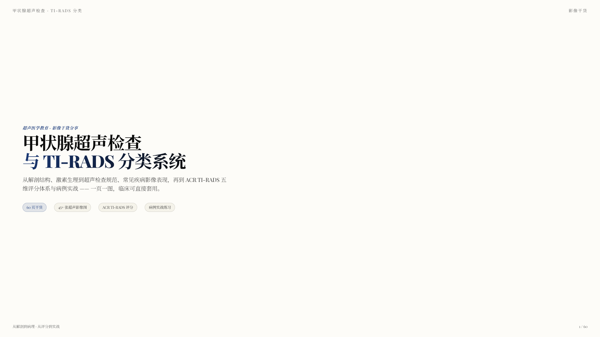
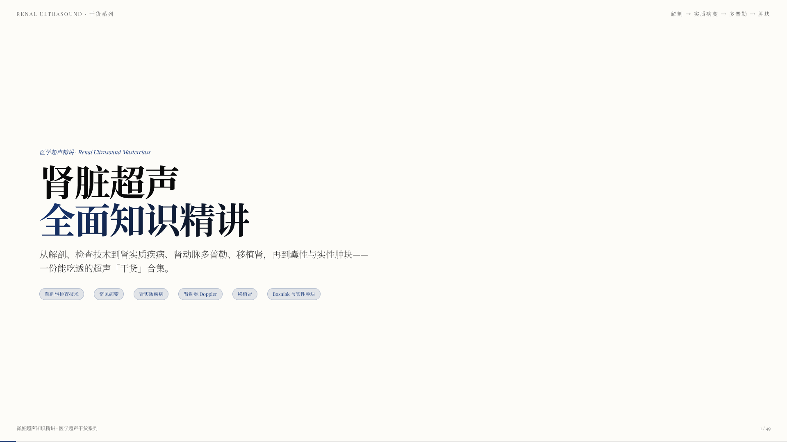

Ultrasound PPT notes
超声PPT
笔记
这是一个基于 HTML 的 PPT 学习专栏，计划每个月更新 2-4 篇，持续整理适合电脑、平板和手机阅读的超声知识。

01 / THYROID
甲状腺超声检查与 TI-RADS 分类
从解剖、生理与规范扫查，到 ACR TI-RADS 评分和病例实战。
打开 HTML PPT
02 / KIDNEY
肾脏超声知识精讲
从检查技术、肾实质疾病到 Doppler、囊性与实性肿块。
打开 HTML PPT